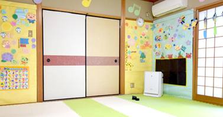
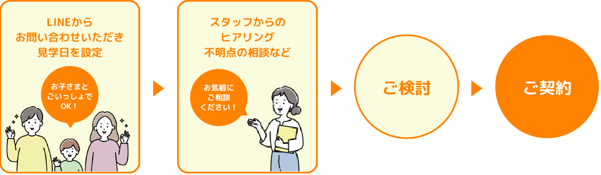
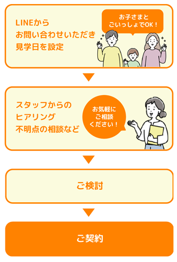

-
TOP ＞ ご利用の流れ
ご利用の流れ
まずはお気軽にご連絡ください。
見学・相談の日程を決めさせていただきます。
お子様とご一緒に見学していただき、ご納得いただけましたらご契約となります。
疑問点、不安点などございましたら遠慮なくお聞きください。
まずは見学！契約までのステップ


ご利用を検討いただける場合、受給者証をすでにお持ちの方は支援を円滑にスタートできるよう、お子様の普段の様子などをお聞きします。
また、契約書等の説明をさせていただきご納得いただけたらすぐにご利用いただけます。
受給者証をお持ちでない方に関しましてはお住いの市役所にて申請手続きを取っていただく必要があります。
取得方法等はご見学いただいた時にご説明させていただきます。
申請手続きは概ね1か月ほどかかりますので申請が終わり受給者証が発行されましたらご利用手続きに移らせていただきます。